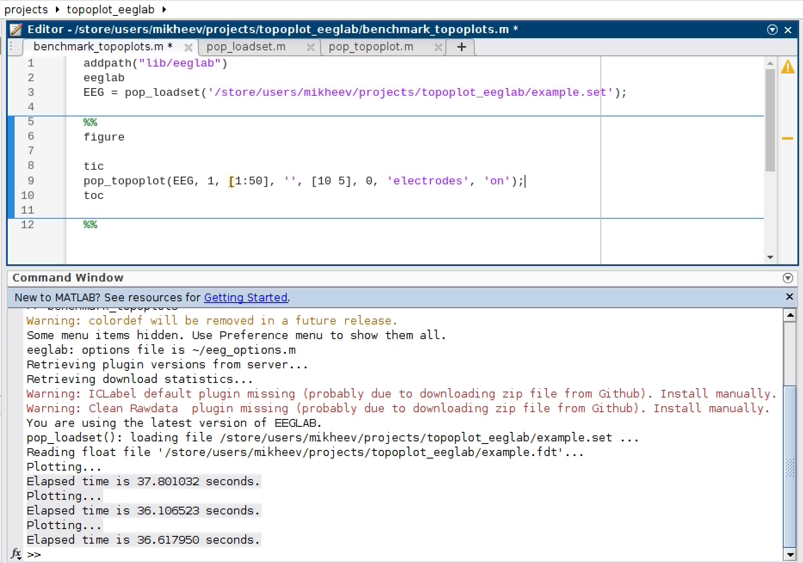
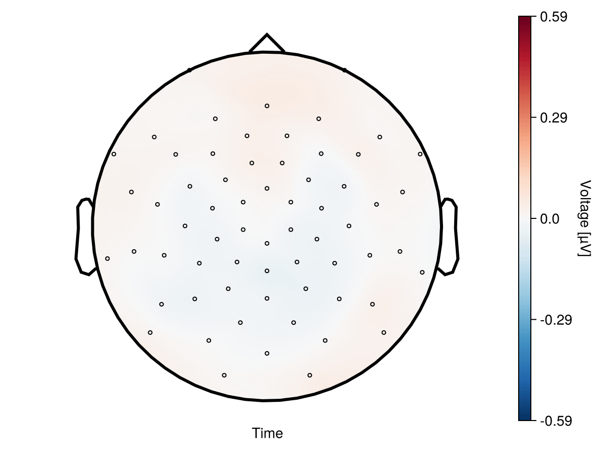
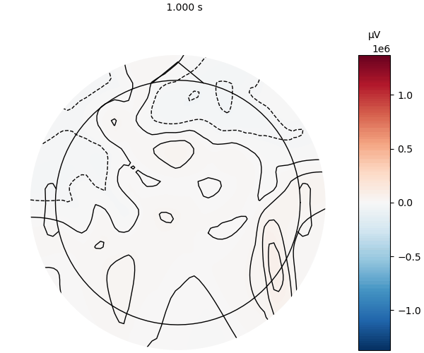

Speed measurement
Here we will compare the speed of plotting UnfoldMakie with MNE (Python) and EEGLAB (MATLAB).
Three cases are measured:
- Single topoplot
- Topoplot series with 50 topoplots
- Topoplott animation with 50 timestamps
Note that the results of benchmarking on your computer and on Github may differ.
using UnfoldMakie
using TopoPlots
using BenchmarkTools
using Observables
using CairoMakie
using Statistics
using PythonPlot;
using PyMNE; CondaPkg Found dependencies: /home/runner/.julia/packages/CondaPkg/8GjrP/CondaPkg.toml
CondaPkg Found dependencies: /home/runner/.julia/packages/PyMNE/cNGDN/CondaPkg.toml
CondaPkg Found dependencies: /home/runner/.julia/packages/PythonCall/83z4q/CondaPkg.toml
CondaPkg Found dependencies: /home/runner/.julia/packages/PythonPlot/oS8x4/CondaPkg.toml
CondaPkg Resolving changes
+ libstdcxx
+ libstdcxx-ng
+ matplotlib
+ mne (pip)
+ openssl
+ python
+ uv
CondaPkg Creating environment
│ /home/runner/.julia/artifacts/43005ee838d3b9ab9b3f1d790fa2e43bd62e6912/bin/micromamba
│ -r /home/runner/.julia/scratchspaces/0b3b1443-0f03-428d-bdfb-f27f9c1191ea/root
│ create
│ -y
│ -p /home/runner/work/UnfoldMakie.jl/UnfoldMakie.jl/docs/.CondaPkg/env
│ --override-channels
│ libstdcxx[version='>=3.4,<15.0']
│ libstdcxx-ng[version='>=3.4,<15.0']
│ matplotlib[version='>=1']
│ openssl[version='>=3, <3.6']
│ python[version='>=3.10,!=3.14.0,!=3.14.1,<4, >=3.4,<4',channel='conda-forge',build='*cp*']
│ uv[version='>=0.4']
│ -c conda-forge
└ -c anaconda
Transaction
Prefix: /home/runner/work/UnfoldMakie.jl/UnfoldMakie.jl/docs/.CondaPkg/env
Updating specs:
- libstdcxx[version=">=3.4,<15.0"]
- libstdcxx-ng[version=">=3.4,<15.0"]
- matplotlib>=1
- openssl[version=">=3,<3.6"]
- conda-forge::python[version=">=3.10,(!=3.14.0,(!=3.14.1,(<4,(>=3.4,<4))))",build="*cp*"]
- uv>=0.4
Package Version Build Channel Size
───────────────────────────────────────────────────────────────────────────────────────────
Install:
───────────────────────────────────────────────────────────────────────────────────────────
+ _openmp_mutex 4.5 20_gnu conda-forge Cached
+ alsa-lib 1.2.15.3 hb03c661_0 conda-forge Cached
+ brotli 1.2.0 hed03a55_1 conda-forge Cached
+ brotli-bin 1.2.0 hb03c661_1 conda-forge Cached
+ bzip2 1.0.8 hda65f42_9 conda-forge Cached
+ ca-certificates 2026.2.25 hbd8a1cb_0 conda-forge Cached
+ cairo 1.18.4 he90730b_1 conda-forge Cached
+ contourpy 1.3.3 py314h97ea11e_4 conda-forge Cached
+ cycler 0.12.1 pyhcf101f3_2 conda-forge Cached
+ cyrus-sasl 2.1.28 hac629b4_1 conda-forge Cached
+ dbus 1.16.2 h24cb091_1 conda-forge Cached
+ double-conversion 3.4.0 hecca717_0 conda-forge Cached
+ font-ttf-dejavu-sans-mono 2.37 hab24e00_0 conda-forge Cached
+ font-ttf-inconsolata 3.000 h77eed37_0 conda-forge Cached
+ font-ttf-source-code-pro 2.038 h77eed37_0 conda-forge Cached
+ font-ttf-ubuntu 0.83 h77eed37_3 conda-forge Cached
+ fontconfig 2.17.1 h27c8c51_0 conda-forge Cached
+ fonts-conda-ecosystem 1 0 conda-forge Cached
+ fonts-conda-forge 1 hc364b38_1 conda-forge Cached
+ fonttools 4.62.0 pyh7db6752_0 conda-forge 838kB
+ freetype 2.14.2 ha770c72_0 conda-forge Cached
+ graphite2 1.3.14 hecca717_2 conda-forge Cached
+ harfbuzz 12.3.2 h6083320_0 conda-forge Cached
+ icu 78.2 h33c6efd_0 conda-forge Cached
+ keyutils 1.6.3 hb9d3cd8_0 conda-forge Cached
+ kiwisolver 1.5.0 py314h97ea11e_0 conda-forge 77kB
+ krb5 1.22.2 ha1258a1_0 conda-forge Cached
+ lcms2 2.18 h0c24ade_0 conda-forge Cached
+ ld_impl_linux-64 2.45.1 default_hbd61a6d_101 conda-forge Cached
+ lerc 4.1.0 hdb68285_0 conda-forge 262kB
+ libblas 3.11.0 5_h4a7cf45_openblas conda-forge Cached
+ libbrotlicommon 1.2.0 hb03c661_1 conda-forge Cached
+ libbrotlidec 1.2.0 hb03c661_1 conda-forge Cached
+ libbrotlienc 1.2.0 hb03c661_1 conda-forge Cached
+ libcblas 3.11.0 5_h0358290_openblas conda-forge Cached
+ libclang-cpp22.1 22.1.0 default_h99862b1_0 conda-forge Cached
+ libclang13 22.1.0 default_h746c552_0 conda-forge Cached
+ libcups 2.3.3 h7a8fb5f_6 conda-forge Cached
+ libdeflate 1.25 h17f619e_0 conda-forge Cached
+ libdrm 2.4.125 hb03c661_1 conda-forge Cached
+ libedit 3.1.20250104 pl5321h7949ede_0 conda-forge Cached
+ libegl 1.7.0 ha4b6fd6_2 conda-forge Cached
+ libexpat 2.7.4 hecca717_0 conda-forge Cached
+ libffi 3.5.2 h3435931_0 conda-forge Cached
+ libfreetype 2.14.2 ha770c72_0 conda-forge Cached
+ libfreetype6 2.14.2 h73754d4_0 conda-forge Cached
+ libgcc 14.3.0 he0feb66_18 conda-forge Cached
+ libgcc-ng 14.3.0 h69a702a_18 conda-forge Cached
+ libgfortran 14.3.0 h69a702a_18 conda-forge Cached
+ libgfortran5 14.3.0 hda2acac_18 conda-forge Cached
+ libgl 1.7.0 ha4b6fd6_2 conda-forge Cached
+ libglib 2.86.4 h6548e54_1 conda-forge Cached
+ libglvnd 1.7.0 ha4b6fd6_2 conda-forge Cached
+ libglx 1.7.0 ha4b6fd6_2 conda-forge Cached
+ libgomp 14.3.0 he0feb66_18 conda-forge Cached
+ libiconv 1.18 h3b78370_2 conda-forge Cached
+ libjpeg-turbo 3.1.2 hb03c661_0 conda-forge Cached
+ liblapack 3.11.0 5_h47877c9_openblas conda-forge Cached
+ libllvm22 22.1.0 hf7376ad_0 conda-forge Cached
+ liblzma 5.8.2 hb03c661_0 conda-forge Cached
+ libmpdec 4.0.0 hb03c661_1 conda-forge Cached
+ libntlm 1.8 hb9d3cd8_0 conda-forge Cached
+ libopenblas 0.3.30 pthreads_h94d23a6_4 conda-forge Cached
+ libopengl 1.7.0 ha4b6fd6_2 conda-forge Cached
+ libpciaccess 0.18 hb9d3cd8_0 conda-forge Cached
+ libpng 1.6.55 h421ea60_0 conda-forge Cached
+ libpq 18.3 h9abb657_0 conda-forge Cached
+ libsqlite 3.52.0 hf4e2dac_0 conda-forge Cached
+ libstdcxx 14.3.0 h934c35e_18 conda-forge Cached
+ libstdcxx-ng 14.3.0 hdf11a46_18 conda-forge Cached
+ libtiff 4.7.1 h9d88235_1 conda-forge Cached
+ libuuid 2.41.3 h5347b49_0 conda-forge Cached
+ libvulkan-loader 1.4.341.0 h5279c79_0 conda-forge Cached
+ libwebp-base 1.6.0 hd42ef1d_0 conda-forge Cached
+ libxcb 1.17.0 h8a09558_0 conda-forge Cached
+ libxcrypt 4.4.36 hd590300_1 conda-forge Cached
+ libxkbcommon 1.13.1 hca5e8e5_0 conda-forge Cached
+ libxml2 2.15.2 he237659_0 conda-forge Cached
+ libxml2-16 2.15.2 hca6bf5a_0 conda-forge Cached
+ libxslt 1.1.43 h711ed8c_1 conda-forge Cached
+ libzlib 1.3.1 hb9d3cd8_2 conda-forge Cached
+ matplotlib 3.10.8 py314hdafbbf9_0 conda-forge Cached
+ matplotlib-base 3.10.8 py314h1194b4b_0 conda-forge Cached
+ munkres 1.1.4 pyhd8ed1ab_1 conda-forge Cached
+ ncurses 6.5 h2d0b736_3 conda-forge Cached
+ numpy 2.4.2 py314h2b28147_1 conda-forge Cached
+ openjpeg 2.5.4 h55fea9a_0 conda-forge Cached
+ openldap 2.6.10 hbde042b_1 conda-forge Cached
+ openssl 3.5.5 h35e630c_1 conda-forge Cached
+ packaging 26.0 pyhcf101f3_0 conda-forge Cached
+ pcre2 10.47 haa7fec5_0 conda-forge Cached
+ pillow 12.1.1 py314h8ec4b1a_0 conda-forge Cached
+ pip 26.0.1 pyh145f28c_0 conda-forge Cached
+ pixman 0.46.4 h54a6638_1 conda-forge Cached
+ pthread-stubs 0.4 hb9d3cd8_1002 conda-forge Cached
+ pyparsing 3.3.2 pyhcf101f3_0 conda-forge Cached
+ pyside6 6.10.2 py314hf36963e_0 conda-forge Cached
+ python 3.14.3 h32b2ec7_101_cp314 conda-forge Cached
+ python-dateutil 2.9.0.post0 pyhe01879c_2 conda-forge Cached
+ python_abi 3.14 8_cp314 conda-forge Cached
+ qhull 2020.2 h434a139_5 conda-forge Cached
+ qt6-main 6.10.2 h17e89b9_5 conda-forge Cached
+ readline 8.3 h853b02a_0 conda-forge Cached
+ six 1.17.0 pyhe01879c_1 conda-forge Cached
+ tk 8.6.13 noxft_h366c992_103 conda-forge Cached
+ tornado 6.5.4 py314h7b0bd38_0 conda-forge Cached
+ tzdata 2025c hc9c84f9_1 conda-forge Cached
+ unicodedata2 17.0.1 py314h5bd0f2a_0 conda-forge Cached
+ uv 0.10.9 h6dd6661_0 conda-forge Cached
+ wayland 1.24.0 hd6090a7_1 conda-forge Cached
+ xcb-util 0.4.1 h4f16b4b_2 conda-forge Cached
+ xcb-util-cursor 0.1.6 hb03c661_0 conda-forge Cached
+ xcb-util-image 0.4.0 hb711507_2 conda-forge Cached
+ xcb-util-keysyms 0.4.1 hb711507_0 conda-forge Cached
+ xcb-util-renderutil 0.3.10 hb711507_0 conda-forge Cached
+ xcb-util-wm 0.4.2 hb711507_0 conda-forge Cached
+ xkeyboard-config 2.47 hb03c661_0 conda-forge Cached
+ xorg-libice 1.1.2 hb9d3cd8_0 conda-forge Cached
+ xorg-libsm 1.2.6 he73a12e_0 conda-forge Cached
+ xorg-libx11 1.8.13 he1eb515_0 conda-forge Cached
+ xorg-libxau 1.0.12 hb03c661_1 conda-forge Cached
+ xorg-libxcomposite 0.4.7 hb03c661_0 conda-forge Cached
+ xorg-libxcursor 1.2.3 hb9d3cd8_0 conda-forge Cached
+ xorg-libxdamage 1.1.6 hb9d3cd8_0 conda-forge Cached
+ xorg-libxdmcp 1.1.5 hb03c661_1 conda-forge Cached
+ xorg-libxext 1.3.7 hb03c661_0 conda-forge Cached
+ xorg-libxfixes 6.0.2 hb03c661_0 conda-forge Cached
+ xorg-libxi 1.8.2 hb9d3cd8_0 conda-forge Cached
+ xorg-libxrandr 1.5.5 hb03c661_0 conda-forge Cached
+ xorg-libxrender 0.9.12 hb9d3cd8_0 conda-forge Cached
+ xorg-libxtst 1.2.5 hb9d3cd8_3 conda-forge Cached
+ xorg-libxxf86vm 1.1.7 hb03c661_0 conda-forge Cached
+ zlib-ng 2.3.3 hceb46e0_1 conda-forge Cached
+ zstd 1.5.7 hb78ec9c_6 conda-forge Cached
Summary:
Install: 134 packages
Total download: 1MB
───────────────────────────────────────────────────────────────────────────────────────────
Transaction starting
Linking python_abi-3.14-8_cp314
Linking tzdata-2025c-hc9c84f9_1
Linking ca-certificates-2026.2.25-hbd8a1cb_0
Linking font-ttf-ubuntu-0.83-h77eed37_3
Linking font-ttf-dejavu-sans-mono-2.37-hab24e00_0
Linking font-ttf-inconsolata-3.000-h77eed37_0
Linking font-ttf-source-code-pro-2.038-h77eed37_0
Linking fonts-conda-forge-1-hc364b38_1
Linking fonts-conda-ecosystem-1-0
Linking libgomp-14.3.0-he0feb66_18
Linking libglvnd-1.7.0-ha4b6fd6_2
Linking _openmp_mutex-4.5-20_gnu
Linking libopengl-1.7.0-ha4b6fd6_2
Linking libegl-1.7.0-ha4b6fd6_2
Linking libgcc-14.3.0-he0feb66_18
Linking libpciaccess-0.18-hb9d3cd8_0
Linking libffi-3.5.2-h3435931_0
Linking libntlm-1.8-hb9d3cd8_0
Linking libgfortran5-14.3.0-hda2acac_18
Linking libwebp-base-1.6.0-hd42ef1d_0
Linking alsa-lib-1.2.15.3-hb03c661_0
Linking libbrotlicommon-1.2.0-hb03c661_1
Linking xorg-libice-1.1.2-hb9d3cd8_0
Linking libdeflate-1.25-h17f619e_0
Linking libjpeg-turbo-3.1.2-hb03c661_0
Linking xorg-libxdmcp-1.1.5-hb03c661_1
Linking pthread-stubs-0.4-hb9d3cd8_1002
Linking xorg-libxau-1.0.12-hb03c661_1
Linking libiconv-1.18-h3b78370_2
Linking libgcc-ng-14.3.0-h69a702a_18
Linking keyutils-1.6.3-hb9d3cd8_0
Linking ncurses-6.5-h2d0b736_3
Linking libzlib-1.3.1-hb9d3cd8_2
Linking libmpdec-4.0.0-hb03c661_1
Linking libexpat-2.7.4-hecca717_0
Linking bzip2-1.0.8-hda65f42_9
Linking libuuid-2.41.3-h5347b49_0
Linking liblzma-5.8.2-hb03c661_0
Linking openssl-3.5.5-h35e630c_1
Linking libstdcxx-14.3.0-h934c35e_18
Linking libdrm-2.4.125-hb03c661_1
Linking libgfortran-14.3.0-h69a702a_18
Linking libbrotlienc-1.2.0-hb03c661_1
Linking libbrotlidec-1.2.0-hb03c661_1
Linking libxcb-1.17.0-h8a09558_0
Linking libxcrypt-4.4.36-hd590300_1
Linking libedit-3.1.20250104-pl5321h7949ede_0
Linking readline-8.3-h853b02a_0
Linking tk-8.6.13-noxft_h366c992_103
Linking libpng-1.6.55-h421ea60_0
Linking zstd-1.5.7-hb78ec9c_6
Linking pcre2-10.47-haa7fec5_0
Linking xorg-libsm-1.2.6-he73a12e_0
Linking lerc-4.1.0-hdb68285_0
Linking wayland-1.24.0-hd6090a7_1
Linking double-conversion-3.4.0-hecca717_0
Linking pixman-0.46.4-h54a6638_1
Linking graphite2-1.3.14-hecca717_2
Linking zlib-ng-2.3.3-hceb46e0_1
Linking icu-78.2-h33c6efd_0
Linking uv-0.10.9-h6dd6661_0
Linking libstdcxx-ng-14.3.0-hdf11a46_18
Linking libopenblas-0.3.30-pthreads_h94d23a6_4
Linking brotli-bin-1.2.0-hb03c661_1
Linking xcb-util-0.4.1-h4f16b4b_2
Linking xcb-util-wm-0.4.2-hb711507_0
Linking xcb-util-keysyms-0.4.1-hb711507_0
Linking xcb-util-renderutil-0.3.10-hb711507_0
Linking xorg-libx11-1.8.13-he1eb515_0
Linking krb5-1.22.2-ha1258a1_0
Linking libfreetype6-2.14.2-h73754d4_0
Linking ld_impl_linux-64-2.45.1-default_hbd61a6d_101
Linking libglib-2.86.4-h6548e54_1
Linking libtiff-4.7.1-h9d88235_1
Linking libsqlite-3.52.0-hf4e2dac_0
Linking libxml2-16-2.15.2-hca6bf5a_0
Linking qhull-2020.2-h434a139_5
Linking libblas-3.11.0-5_h4a7cf45_openblas
Linking brotli-1.2.0-hed03a55_1
Linking xcb-util-image-0.4.0-hb711507_2
Linking xkeyboard-config-2.47-hb03c661_0
Linking xorg-libxfixes-6.0.2-hb03c661_0
Linking libglx-1.7.0-ha4b6fd6_2
Linking xorg-libxrender-0.9.12-hb9d3cd8_0
Linking xorg-libxext-1.3.7-hb03c661_0
Linking cyrus-sasl-2.1.28-hac629b4_1
Linking libcups-2.3.3-h7a8fb5f_6
Linking libfreetype-2.14.2-ha770c72_0
Linking dbus-1.16.2-h24cb091_1
Linking openjpeg-2.5.4-h55fea9a_0
Linking lcms2-2.18-h0c24ade_0
Linking python-3.14.3-h32b2ec7_101_cp314
Linking libxml2-2.15.2-he237659_0
Linking libcblas-3.11.0-5_h0358290_openblas
Linking liblapack-3.11.0-5_h47877c9_openblas
Linking xcb-util-cursor-0.1.6-hb03c661_0
Linking xorg-libxcomposite-0.4.7-hb03c661_0
Linking libgl-1.7.0-ha4b6fd6_2
Linking xorg-libxcursor-1.2.3-hb9d3cd8_0
Linking xorg-libxi-1.8.2-hb9d3cd8_0
Linking xorg-libxdamage-1.1.6-hb9d3cd8_0
Linking xorg-libxxf86vm-1.1.7-hb03c661_0
Linking xorg-libxrandr-1.5.5-hb03c661_0
Linking openldap-2.6.10-hbde042b_1
Linking freetype-2.14.2-ha770c72_0
Linking fontconfig-2.17.1-h27c8c51_0
Linking libxkbcommon-1.13.1-hca5e8e5_0
Linking libxslt-1.1.43-h711ed8c_1
Linking libllvm22-22.1.0-hf7376ad_0
Linking xorg-libxtst-1.2.5-hb9d3cd8_3
Linking libvulkan-loader-1.4.341.0-h5279c79_0
Linking libpq-18.3-h9abb657_0
Linking cairo-1.18.4-he90730b_1
Linking libclang-cpp22.1-22.1.0-default_h99862b1_0
Linking libclang13-22.1.0-default_h746c552_0
Linking harfbuzz-12.3.2-h6083320_0
Linking qt6-main-6.10.2-h17e89b9_5
Linking pip-26.0.1-pyh145f28c_0
Linking munkres-1.1.4-pyhd8ed1ab_1
Linking six-1.17.0-pyhe01879c_1
Linking pyparsing-3.3.2-pyhcf101f3_0
Linking packaging-26.0-pyhcf101f3_0
Linking cycler-0.12.1-pyhcf101f3_2
Linking python-dateutil-2.9.0.post0-pyhe01879c_2
Linking unicodedata2-17.0.1-py314h5bd0f2a_0
Linking pillow-12.1.1-py314h8ec4b1a_0
Linking numpy-2.4.2-py314h2b28147_1
Linking kiwisolver-1.5.0-py314h97ea11e_0
Linking tornado-6.5.4-py314h7b0bd38_0
Linking pyside6-6.10.2-py314hf36963e_0
Linking contourpy-1.3.3-py314h97ea11e_4
Linking fonttools-4.62.0-pyh7db6752_0
Linking matplotlib-base-3.10.8-py314h1194b4b_0
Linking matplotlib-3.10.8-py314hdafbbf9_0
Transaction finished
To activate this environment, use:
micromamba activate /home/runner/work/UnfoldMakie.jl/UnfoldMakie.jl/docs/.CondaPkg/env
Or to execute a single command in this environment, use:
micromamba run -p /home/runner/work/UnfoldMakie.jl/UnfoldMakie.jl/docs/.CondaPkg/env mycommand
CondaPkg Installing Pip packages
│ /home/runner/work/UnfoldMakie.jl/UnfoldMakie.jl/docs/.CondaPkg/env/bin/uv
│ pip
│ install
└ mne >=1.4
Using Python 3.14.3 environment at: /home/runner/work/UnfoldMakie.jl/UnfoldMakie.jl/docs/.CondaPkg/env
Resolved 25 packages in 120ms
Downloading scipy (33.6MiB)
Downloading mne (7.1MiB)
Downloaded mne
Downloaded scipy
Prepared 14 packages in 561ms
Installed 14 packages in 37ms
+ certifi==2026.2.25
+ charset-normalizer==3.4.5
+ decorator==5.2.1
+ idna==3.11
+ jinja2==3.1.6
+ lazy-loader==0.5
+ markupsafe==3.0.3
+ mne==1.11.0
+ platformdirs==4.9.4
+ pooch==1.9.0
+ requests==2.32.5
+ scipy==1.17.1
+ tqdm==4.67.3
+ urllib3==2.6.3Data input
dat, positions = TopoPlots.example_data()
df = UnfoldMakie.eeg_array_to_dataframe(dat[:, :, 1], string.(1:length(positions)));Topoplots
UnfoldMakie.jl
@benchmark plot_topoplot(dat[:, 320, 1]; positions = positions)BenchmarkTools.Trial: 102 samples with 1 evaluation per sample.
Range (min … max): 44.132 ms … 310.265 ms ┊ GC (min … max): 0.00% … 83.43%
Time (median): 45.991 ms ┊ GC (median): 0.00%
Time (mean ± σ): 48.944 ms ± 26.180 ms ┊ GC (mean ± σ): 5.18% ± 8.26%
▃ ▃ ▃ ▃█▂
▅▄▅▁█▇█▇▅█▄▇▇████▇█▅▄▄▅▁▅▄▄▅▁▁▄▄▁▇▄▁▄▄▁▄▁▄▁▁▄▅▇▁▁▅▁▄▁▁▁▁▁▁▁▄ ▄
44.1 ms Histogram: frequency by time 51.3 ms <
Memory estimate: 11.82 MiB, allocs estimate: 194614.UnfoldMakie.jl with DelaunayMesh
@benchmark plot_topoplot(
dat[:, 320, 1];
positions = positions,
topo_interpolation = (; interpolation = DelaunayMesh()),
)BenchmarkTools.Trial: 97 samples with 1 evaluation per sample.
Range (min … max): 45.663 ms … 335.939 ms ┊ GC (min … max): 0.00% … 84.16%
Time (median): 49.047 ms ┊ GC (median): 0.00%
Time (mean ± σ): 51.650 ms ± 29.216 ms ┊ GC (mean ± σ): 5.64% ± 8.55%
▁ ▁ ▃ ▁ ▃ ▆ ▃▁ █▁ ▁
▄▇▄▄█▇▁▄▄█▄▇█▄▇▇▁▄▄▇█▁▄▄▄▇▄▄▄▁▄▁▁▇▁▇█▁▇▄▇▇▄█▄▄▇▄▄██▇▄▄██▁█▇▄ ▁
45.7 ms Histogram: frequency by time 51.3 ms <
Memory estimate: 11.82 MiB, allocs estimate: 194621.MNE
posmat = collect(reduce(hcat, [[p[1], p[2]] for p in positions])')
pypos = Py(posmat).to_numpy()
pydat = Py(dat[:, 320, 1])
@benchmark begin
f = PythonPlot.figure()
PyMNE.viz.plot_topomap(
pydat,
pypos,
sphere = 1.1,
extrapolate = "box",
cmap = "RdBu_r",
sensors = false,
contours = 6,
)
f.show()
endBenchmarkTools.Trial: 406 samples with 1 evaluation per sample.
Range (min … max): 11.620 ms … 174.932 ms ┊ GC (min … max): 0.00% … 0.00%
Time (median): 11.775 ms ┊ GC (median): 0.00%
Time (mean ± σ): 12.323 ms ± 8.253 ms ┊ GC (mean ± σ): 0.00% ± 0.00%
▃▆██▇▅▄▃▁
██████████▆▄▄▁▄▁▁▁▁▁▁▁▁▁▁▁▁▄▁▁▁▁▄▁▁▁▄▁▁▁▄▁▄▁▁▁▁▁▁▁▁▄▁▁▁▁▁▁▁▄ ▇
11.6 ms Histogram: log(frequency) by time 14.2 ms <
Memory estimate: 3.30 KiB, allocs estimate: 98.Topoplot series
Note that UnfoldMakie and MNE have different defaults for displaying topoplot series. UnfoldMakie in plot_topoplot averages over time samples. MNE in plot_topopmap displays single samples without averaging.
UnfoldMakie.jl
@benchmark begin
plot_topoplotseries(
df;
bin_num = 50,
positions = positions,
axis = (; xlabel = "Time windows [s]"),
)
endBenchmarkTools.Trial: 3 samples with 1 evaluation per sample.
Range (min … max): 2.106 s … 2.177 s ┊ GC (min … max): 0.00% … 0.00%
Time (median): 2.147 s ┊ GC (median): 0.00%
Time (mean ± σ): 2.143 s ± 35.930 ms ┊ GC (mean ± σ): 0.00% ± 0.00%
█ █ █
█▁▁▁▁▁▁▁▁▁▁▁▁▁▁▁▁▁▁▁▁▁▁▁▁▁▁▁▁▁▁▁█▁▁▁▁▁▁▁▁▁▁▁▁▁▁▁▁▁▁▁▁▁▁▁█ ▁
2.11 s Histogram: frequency by time 2.18 s <
Memory estimate: 342.18 MiB, allocs estimate: 4920364.MNE
easycap_montage = PyMNE.channels.make_standard_montage("standard_1020")
ch_names = pyconvert(Vector{String}, easycap_montage.ch_names)[1:64]
info = PyMNE.create_info(PyList(ch_names), ch_types = "eeg", sfreq = 1)
info.set_montage(easycap_montage)
simulated_epochs = PyMNE.EvokedArray(Py(dat[:, :, 1]), info)
@benchmark simulated_epochs.plot_topomap(1:50)BenchmarkTools.Trial: 8 samples with 1 evaluation per sample.
Range (min … max): 671.754 ms … 696.650 ms ┊ GC (min … max): 0.00% … 0.00%
Time (median): 676.848 ms ┊ GC (median): 0.00%
Time (mean ± σ): 678.959 ms ± 8.307 ms ┊ GC (mean ± σ): 0.00% ± 0.00%
█ ██ █ ██ █ █
█▁██▁▁▁▁█▁▁▁▁▁▁▁██▁▁▁▁▁▁▁▁▁▁▁▁▁█▁▁▁▁▁▁▁▁▁▁▁▁▁▁▁▁▁▁▁▁▁▁▁▁▁▁▁▁█ ▁
672 ms Histogram: frequency by time 697 ms <
Memory estimate: 2.39 KiB, allocs estimate: 69.MATLAB
Running MATLAB on a GitHub Action is not easy. So we benchmarked three consecutive executions (on a screenshot) on a server with an AMD EPYC 7452 32-core processor. Note that Github and the server we used for MATLAB benchmarking are two different computers, which can give different timing results.

Animation
The main advantage of Julia is the speed with which the figures are updated.
timestamps = range(1, 50, step = 1)
framerate = 5050UnfoldMakie with .gif
vals = vec(dat[:, :, 1])
p01, p99 = quantile(vals, [0.01, 0.99])
m = max(abs(p01), abs(p99))
cr = Float32.((-m, m))
@benchmark begin
f = Makie.Figure()
dat_obs = Observable(dat[:, 1, 1])
plot_topoplot!(f[1, 1], dat_obs, positions = positions, visual = (; contours = false, colorrange = cr),)
record(f, "topoplot_animation_UM.gif", timestamps; framerate = framerate) do t
dat_obs[] = @view(dat[:, t, 1])
end
endBenchmarkTools.Trial: 3 samples with 1 evaluation per sample.
Range (min … max): 1.958 s … 1.986 s ┊ GC (min … max): 0.00% … 0.00%
Time (median): 1.982 s ┊ GC (median): 0.00%
Time (mean ± σ): 1.975 s ± 15.399 ms ┊ GC (mean ± σ): 0.00% ± 0.00%
█ █ █
█▁▁▁▁▁▁▁▁▁▁▁▁▁▁▁▁▁▁▁▁▁▁▁▁▁▁▁▁▁▁▁▁▁▁▁▁▁▁▁▁▁▁▁▁▁▁▁█▁▁▁▁▁▁▁█ ▁
1.96 s Histogram: frequency by time 1.99 s <
Memory estimate: 120.33 MiB, allocs estimate: 416766.
MNE with .gif
@benchmark begin
fig, anim = simulated_epochs.animate_topomap(
times = Py(timestamps),
frame_rate = framerate,
blit = false,
image_interp = "cubic", # same as CloughTocher
)
anim.save("topomap_animation_mne.gif", writer = "ffmpeg", fps = framerate)
endBenchmarkTools.Trial: 1 sample with 1 evaluation per sample.
Single result which took 9.221 s (0.00% GC) to evaluate,
with a memory estimate of 3.03 KiB, over 96 allocations.Note, that due to some bugs in (probably) PythonCall topoplot is black and white.

This page was generated using Literate.jl.